// pick html element with <img> tag and save it in ourImage variable
const ourImage = document.querySelector('img')
// save url of the picture we want to paste in newURL variable
const newURL = 'https://food.fnr.sndimg.com/content/dam/images/food/fullset/2016/8/23/0/FNM_100116-Classic-Crust_s4x3.jpg.rend.hgtvcom.1280.960.suffix/1480972867043.webp'
// change srcset attribute to newURL
ourImage.setAttribute('srcset', newURL)
// change width
ourImage.setAttribute('width', 300)Front-end Web Dev Crash Course Part 1/4
javascript
html
css
This is part 1/4 notes of a Youtube Front-end web development crash course.
Lesson 1
Change webpage element using Inspector tool
- Step 1: Open the inspect tool by right-click → inspect on any webpage.
- Step 2: Select the cursor symbol (top most red arrow) to pick element on the webpage.
- Step 3: Pick the element we want to get the code for. Here, we click on the “Google” logo and the corresponding HTML code for the Google logo is then highlighted on the right-hand side panel.
- Step 4: To change the Google logo, we have to update its
srcsetattribute. We can also change the width and the height attributes. Note that we may need to uncheck some elements (specificallyobject-fit: contain;andwidth: auto;) in the styles tab (bottom right most rectangle) for the changes in width and height to take effect on the webpage.

Here we inserted a picture of a pizza (right click the picture we want to insert → Copy Image Link) in place of the “Google” logo. We also adjusted the width and height.
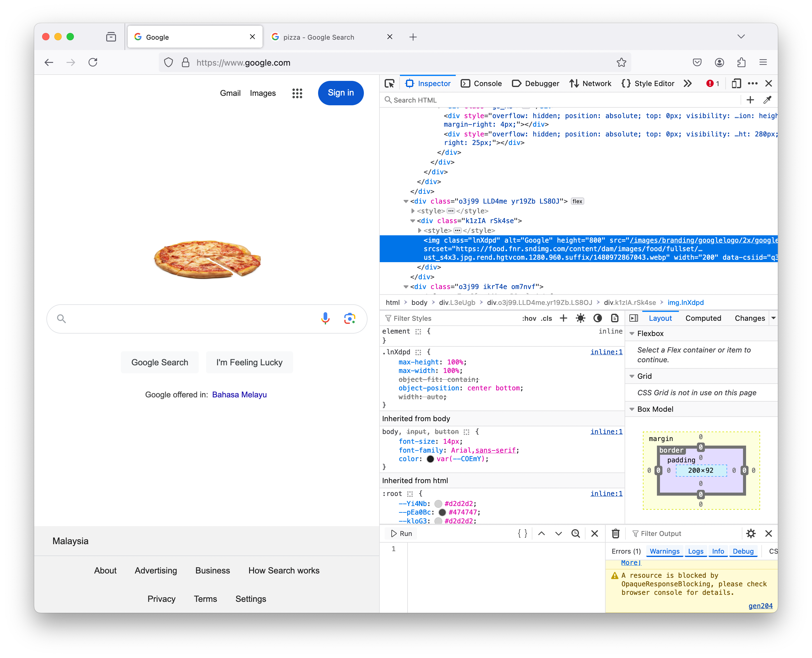
Change webpage element on Console tab
The console tab allows you to: - write Javascript on the code editor - modify the document object model (dom)
To modify the “Google” logo using Console tab:
- Step 1: Click on the
Consoletab (top most arrow) - Step 2: Write Javascript in the editor (left most rectangle). In the code snippet we added here:
- line 1:
const ourImage = ...means we are selecting the HTML element with object tagimgand save it in a variable calledourImage - line 2: we just print our
ourImageto see what gets saved.
- line 1:
- Step 3: When we click
▷ Run, the result is shown in the right most panel. Noticed that the same HTML portion that we edited earlier using theInspectortool is shown here.
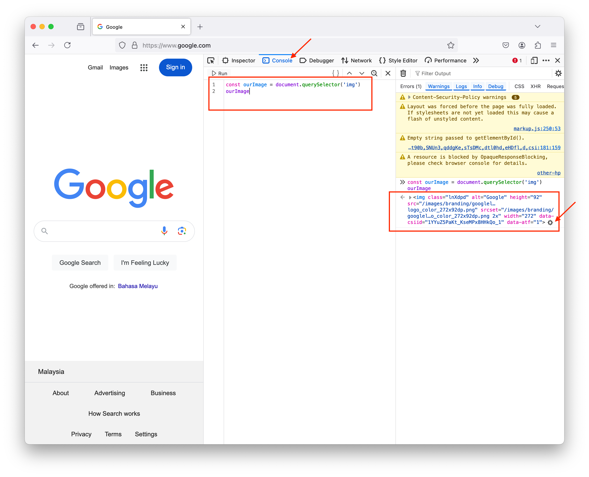
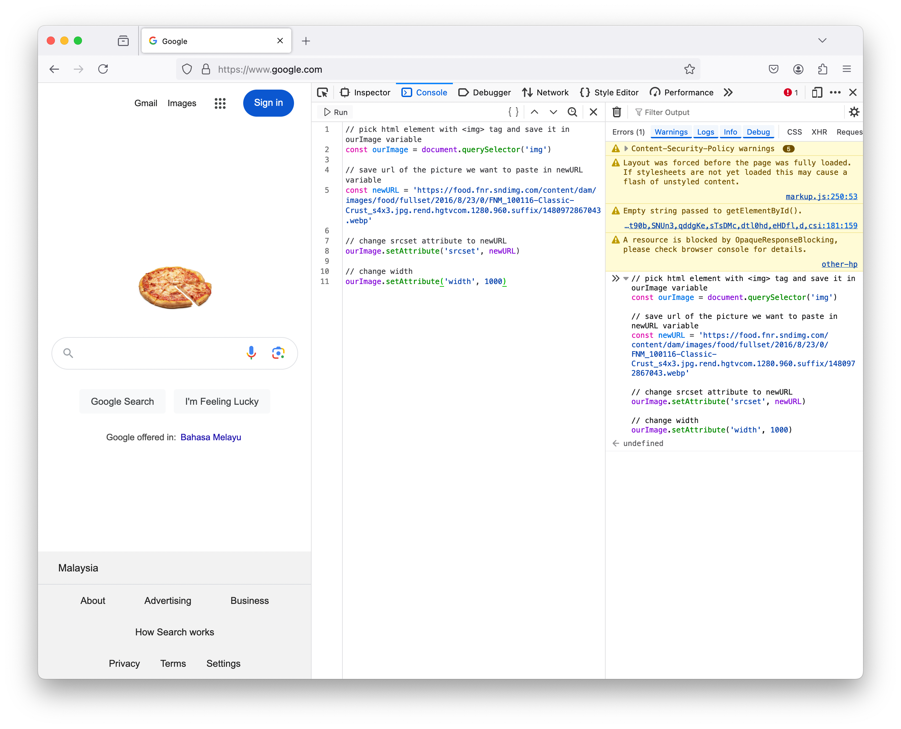
// creating a function to change the google logo
function changeImage(url){
document.querySelector('img').setAttribute('srcset', url)
}
// call the function
changeImage(newURL)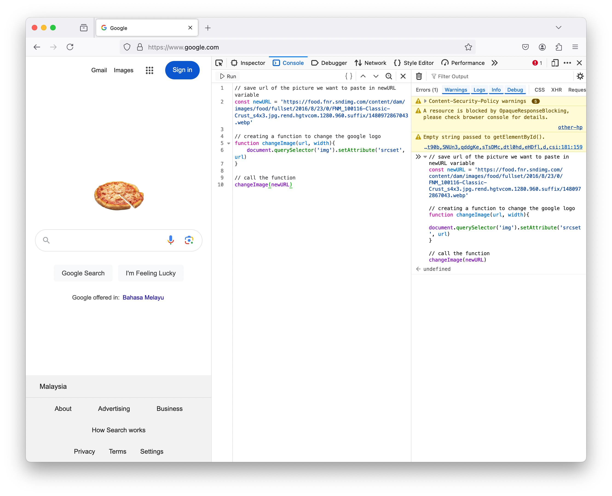
Event listener to change background color on click
Now, we want to write a program that could change the background color to a random color every time a user click on the webpage.
We could do this manually on the Inspector tool by (1) select the <body> container (top rectangle). (2) change the background: #fff to whatever color we want (bottom arrow).
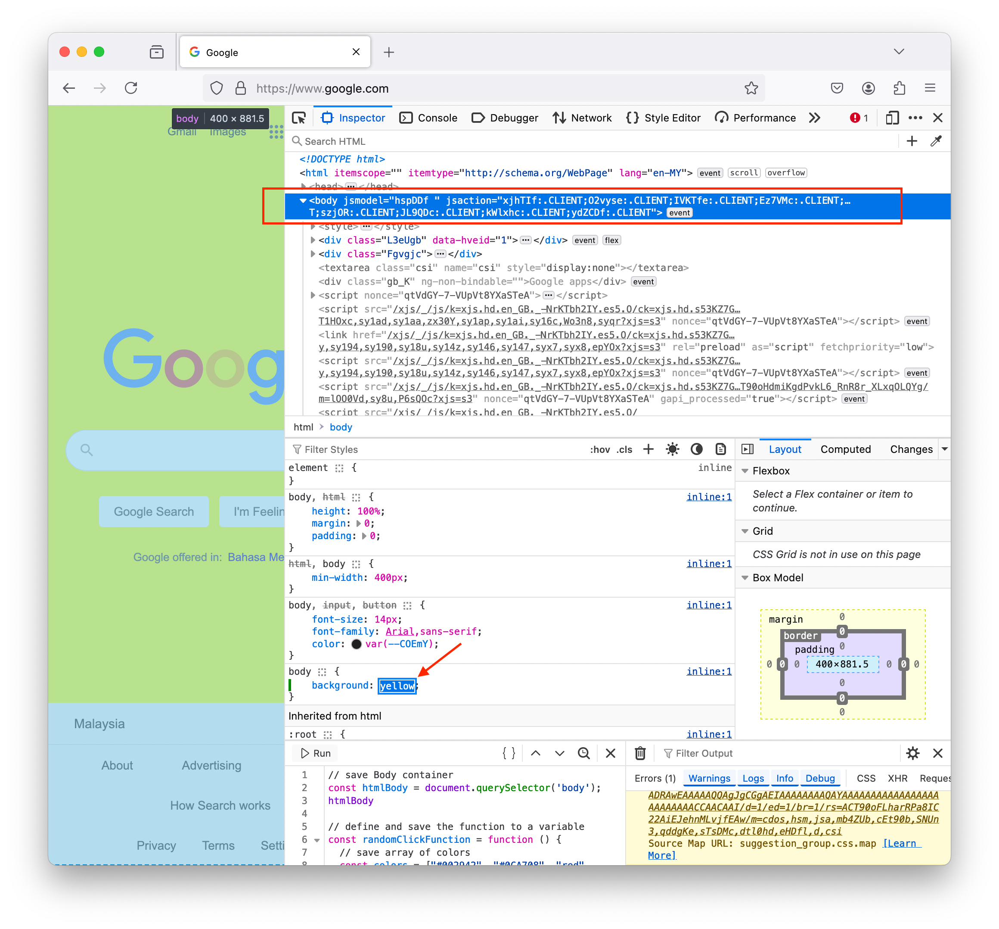
To trigger the background change every time a user click, we have to write the code below in the Console tab and run. Now, every time a user clicks on the webpage, the htmlBody.onClick event listener will run the randomClickFunction we defined and print out some messages to the console log.
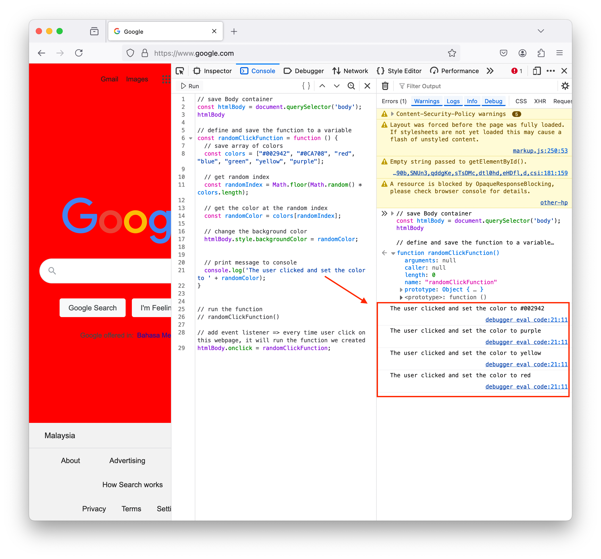
// save Body container
const htmlBody = document.querySelector('body');
// define and save the function to a variable
const randomClickFunction = function () {
// save array of colors
const colors = ["#002942", "#0CA708", "red", "blue", "green", "yellow", "purple"];
// get random index
const randomIndex = Math.floor(Math.random() * colors.length);
// get the color at the random index
const randomColor = colors[randomIndex];
// change the background color
htmlBody.style.backgroundColor = randomColor;
// print message to console
console.log('The user clicked and set the color to ' + randomColor);
}
// to run the function
// randomClickFunction()
// add event listener => every time user click on this webpage, it will run the function we created
htmlBody.onclick = randomClickFunction;Lesson 2
QnA Takeaways: - Javascript is just a programming language made for the web. - Javascript can run in a web browser unlike any other language (up until recently). Recently, WebAssembly 1.0 released in 4 web browsers that does let you write other different languages directly in the web browser. But even with WebAssembly there are a lot of complicated steps to get it all set up. - What can we create with Javascript: - Web applications: using front-end frameworks like Angular, React (most popular ones at the moment) - Backend servers: using nestjs - Desktop applications for various OS: using electrons - Mobile apps: using React Native, NativeScript - Do AI, ML, Data Science projects: Tensorflow.js - What is Javascript framework (or any framework)? - A framework is something on top of a language - ie an abstraction on top of Javascript - that lets the developer to do something more efficiently in less time. - Eg Facebook is created largely using a framework called React. But it could have been built without a framework - in plain Javascript, HTML, CSS. But they wanted to automate the repetitive tasks, so this is how React is created. - Is Javascript is similar to Java? - No, Javascript is meant to be a companion to Java (so they have a little similarity) but they could not be more different than how ‘Car’ and ‘Carpet’ is no at all similar except they both have ‘car’ in them. - Is CSS and HTML required to work with Javascript? - It depends on where you are running that Javascript. - We use HTML and CSS mainly to allow interaction for our users, then Javascript in the front end will take in input data from the user interaction, then it will fire up some process in the backend, ie sending the information to nodejs version of Javascript and do something. - Eg when user key in email and password at a login page, the front-end Javascript will take in the input data and send it through the login process script, this script will convert the password to a hashed password and lookup the email to compare the inputted hashed password to the hashed password we stord in our database. Then once we’ve verified the user’s login, we send a response to the front-end to redirect the user to a different page. - What is the difference between ECMAScript (ES6 is the latest specification of ECMAScript) vs JavaScript? - ECMAScript is like ISO for Javascript and Javascript is actually an implementation of this standard implementation. So this organization takes care of standardizing usage of Javascript across the world. This is important for developers to know because of browsers compatibility among other things. - Where does Javascript runs? - In a runtime – a runtime is an environment where a code is run. There are 2 runtimes in Javascript: nodejs runtime and the browser runtime. - If the Javascript code is running in the backend in node.js, then it uses the v8 engine. - If the Javascript code is running in the frontend within Google Chrome, then it is also uses V8 engine. This V8 engine is the one that does all the compilation (take your Javascript code and convert it into something a computer can read). - If the Javascript code is running in the frontend within Firefox, spider monkey - which is the original engine for Javacript that was built within the Netscape browser way back in the day - is used to compile Javascript. - Check out “Browser Wars” podcast to listen to interesting takes like these. - We need to be aware of where we run our Javascript code because: - It will run differently (eg as we’ve seen above different browsers use different compilation methods). - There are certain things that you can not run within the node.js runtime. Eg here we get Uncaught ReferenceError: document is not defined error. This is because in the node.js runtime, document object model does not exist. 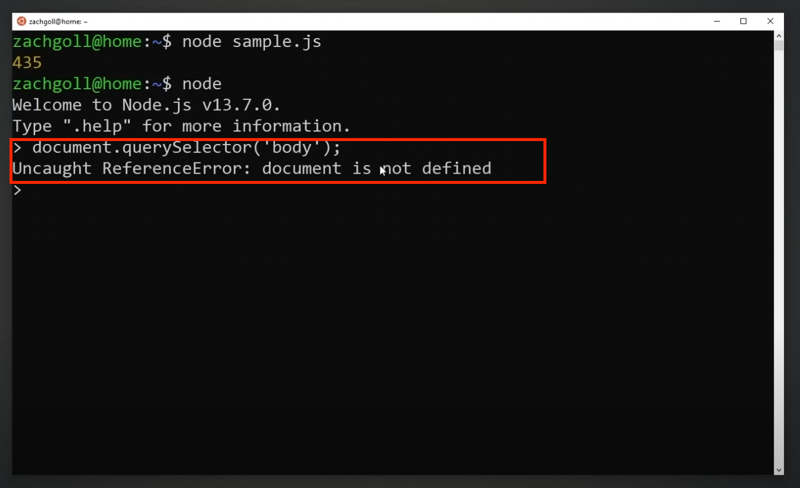
Example of a HTML webpage that incorportate CSS and Javascript. 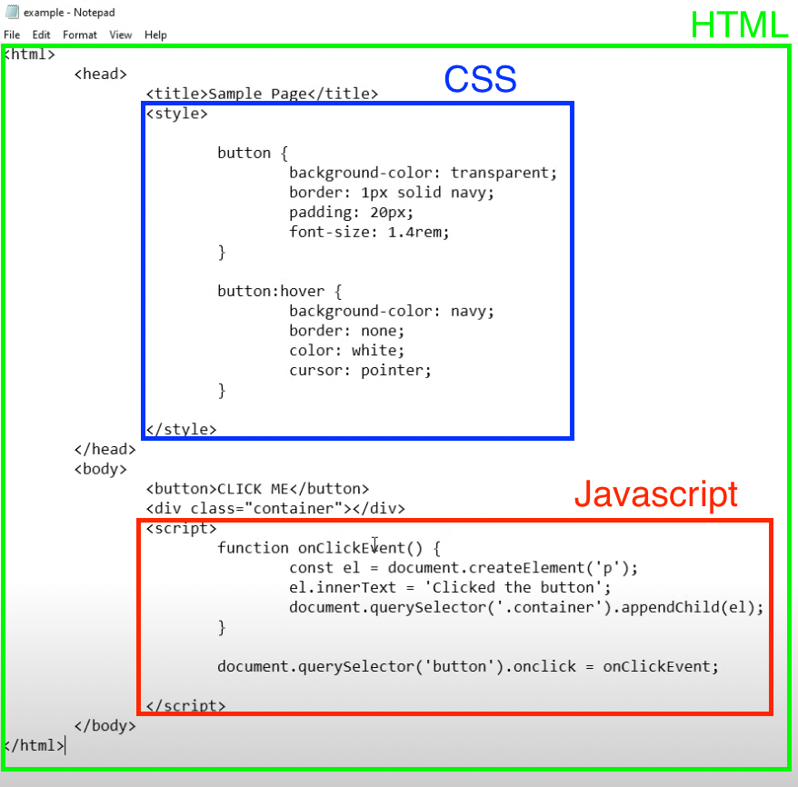
- CSS part is only to style the visual of the button at static
button, and during hoverbutton:hover - Javascript part add a click event listener
Document.querySelector('button').onclickthat:- create a new paragraph element and save it in a variable
const el = document.createElement('p') - add some text to the paragraph element
el.innerText = 'Clicked the button' - append the variable to the container div
document.querySelector('.container).appendChild(el)
- create a new paragraph element and save it in a variable
References
- Podcast/Browser wars: Podcast series on topics about different browser runtimes.
Lesson 3
Video timestamp: JavaScript variables
Notes on syntax
We can print something using
console.log()statement. This is built in to Javascript, so we can use it in both node.js and browser runtime.Single line comment is written using 2 forward slash
//.Multiple line comments is written between
/*…*/.Semicolon
;indicates the end of an expression. ``` // good example const oneVar = 20; const secondVar = 30;// bad example (missing
;) const oneVar = 20 const secondVar = 30; ```Just like python, we can use single quotation
''or double quotation""to write string.- But the community convention (and many code linters) converge towards single quotations.
Boolean values are all lowercase
trueorfalse.
// quick examples of declaring various data types
const yourFirstVariable = 'learning to code gives you superpower';
const yourSecondVariable = 10;
const yourThirdVariable = {firstProperty: 'hello world'};var vs let vs const
- When we create a variable, we need to first declare the variable then assign it. But we can also break it down in multiple steps.
- Eg1 declare and assign it in one go:
const myvar = 'hello world' - Eg2 declare and assign variables in 2 steps:
let anotherVar;declare a variableanotherVar = 20;assign the variable
- Eg1 declare and assign it in one go:
- You can use at least one of these keywords [const, let, var] when creating variables.
const variable1 = 10; let variable2 = 10; var variable3 = 10;varkeyword: should be against using it, because it can be redeclared. This is used in old legacy version of Javascript. Eg when we do:
var myvariable = 10; var myvariable = 20; // this will redeclare the variable `myvariable` from storing the value of 10 to storing the value of 20. And it will not give us any error. Compared to when we do this using `const` keyword. const anotherVariable = 10; const anotherVariable = 20; // this will give us `Uncaught SyntaxError: redeclaration of const anotherVariable`- using the `var` keyword it may be useful when we want to redeclare variables especially when we are using console. But when you're actually writing code, it can be dangerous to be able to redeclare vaiables.letkeyword: we use this when we expect to reassign a variable at some point in your code.- Note that redeclaring != reassigning.
- Declaring a variable allocates a memory space for that variable we are declaring.
- Assigning a variable is where we save an actual value in the space we’ve declared. When we reassign variable, we replace the stored value to a new value we want to save in the same memory slot. ``` let counter = 0;
// reassigning the value of the variable
countercounter = counter + 1;// reassigning the value of the variable
counter(same as the previous line – adds 1 tocounter) counter++; ```- Note that redeclaring != reassigning.
constkeyword: can not reassign a new value to a constant variable. We should useconstwhen we expect the value will never change.
const counter = 0; // this will give us `Uncaught TypeError: invalid assignment to const `counter` counter++;
Variable naming conventions
- All the below lines are valid in Javascript. They are all written slightly differently, so Javascript recognizes them as different variables that’s why we are allowed to declare all of these at once.
- Conventionally, there are some of these writing styles that are more preferable in the Javascript programming language than others.
- Writting styles indicate to other programmers something about your code.
- There are various style guides out there: Google JavaScript style guide, Airbnb JavaScript style guide.
- These are like specifications on how the companies want their employees to write their Javascript code. This might entails different naming conventions, different use cases of Javascript features etc.
// written in camel case -- generally recommended const yourFirstVariable = 10; // written in snake case const your_first_variable = 10; // written in constant case const YOUR_FIRST_VARIABLE = 10; // written in all lowercases const yourfirstvariable = 10; // written in Pascal case const YourFirstVariable = 10;
- When naming variable, be descriptive but keep it short.
Data types
Quick overview of different data types: ``` // storing a number const variable1 = 10;
// storing another variable const variable2 = variable1;
// storing a string const variable3 = ‘Zach’;
// storing an object const variable4 = { variableType: “object”, variableValue: “some value”, };
// storing immediately invoked function const variable5 = (function() { return “Hello, my name is”; })();
// storing a combination of variables const variable6 = variable5 + variable3; console.log(variable6); // [output] Hello, my name is Zach
// storing a boolean const variable7 = false; ```
We don’t need to specify what type of data type that we want to store in the variable when we declare variable unlike in statically typed language (eg Typescript, C, C++, Java) where we need to specify the data type.
- Eg how we would declare a variable in TypeScript (a superset of Javascript, it is a language that is transpiled down into Javascript and allows for type checking):
const variable1: number = 10;- Here we are declaring a new variable called
variable1and specifying it is of data typenumberand assigning the value 10 to store in the new variable.
- Here we are declaring a new variable called
- Javascript is called a dynamically typed language, where the compiler will have no clue what data type a variable will store until it actually evaluates the data type of the value you’re assigning to it.
- We can check data type of variable by:
typeof variable1;. - We need to be aware of the data types of our variables so we don’t do something that would trigger implicit coercion of variable type. Eg the below example coerced
variable1which is of type number into type string and concatenated together with the value ofvariable2.
const variable1 = 10; const variable2 = 'some text'; variable1 + variable2; // [output] "10some value"- Eg how we would declare a variable in TypeScript (a superset of Javascript, it is a language that is transpiled down into Javascript and allows for type checking):
To explicitly coerce different data type, eg: ``` const number1 = ‘10’; const number2 = 20;
// explict coercion of
number1variable Number(number1) + number2; // [output] 30// implicit coercion of
number2variable number1 + number2; // [output] “1020” ```Everything is an object in Javascript.
Arrays
Think of it as a list. You can put in any data type you want.
const firstArray = [10, 20, 30, 40]; const secondArray = [10, 'a string', {prop: 'hello'}, [1,2]];All elements are indexed. Index start at 0. Use the index to retrieve the element: ``` console.log(secondArray[3]) // [Output] [1,2]
console.log(secondArray[3][0]) // [Ouptut] 1 ```
Objects
Hashmap to store key value pair.
To create an object. Notice that we did not write the key as string – this is different with python.
const objectVariable = {prop1: 20, prop2: 50};We use dot notation to access the value stored in the object. Or using brackets, note that if we access key value using brackets, we need to write the key as string. ``` objectVariable.prop1 // [Output] 20
objectVariable[‘prop1’] // [Output] 20 ```
Can be nested. Eg: ``` const nestedObject = { layer1: { layer2: { layer3: { targetValue: 20 } } } }
// to retrieve the
targetValueproperty nestedObject.layer1.layer2.layer3.targetValue // [Output] 20 ```
Functions
Functions are valid things you can assign into a variable.
To create a function ``` // define function and assign the function to a variable const functionContainerVariable = function(){ return 20; }
// call the function functionContainerVariable() // [Output] 20 ```
NaN
- We get this if we are trying to do math operation on a alphabet string.
const myString = 'some string'; console.log(Number('30')); // 30 console.log(Number(myString)); // NaN console.log(Number(myString) + 2); // NaN console.log(myString / 2); // NaN console.log(myString * 2); // NaN console.log(myString - 2); // NaN
Null
Primitive data type.
Null is a falsy value.
let num = null; if (num){ console.log('this will not be reached because num is evaluated to false'); } else { console.log('this will be reached'); } // [Output] this will be reached
Undefined
Primitive data type.
Any variable with no value assigned is of undefined data type.
Undefined is a falsy value. ``` // notice we declared myvar but did not assign any value let myvar;
console.log(myvar) // [Output] undefined
console.log(typeof(myvar)) // [Output] undefined
if (myvar) { console.log(‘this will not be reached because myvar is evaluated as false’); } else { console.log(‘this will be reached’); } // [Output] this will be reached ```
Excercise
- Challenge 1:
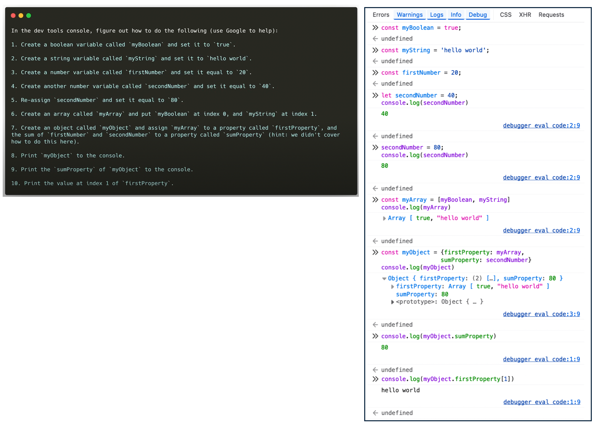
Challenge 2:
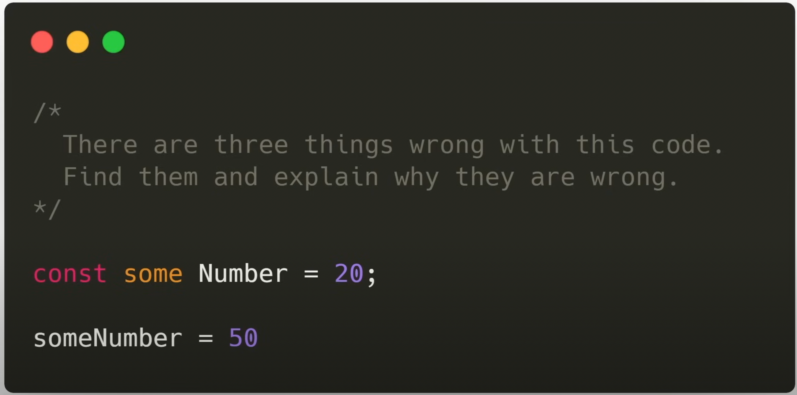 ``
//someandNumber` here is not a single word, so it throws error. Name of variable need to be 1 word. const some Number = 20;// It seems like we are trying to reassign to a constant variable here, which we can not do someNumber = 50 ```
- Answer:
// the name of a variable needs to be 1 word let someNumber = 20; // we should use `let` when declaring a variable that we want to reassign later someNumber = 50;Challenge 3:
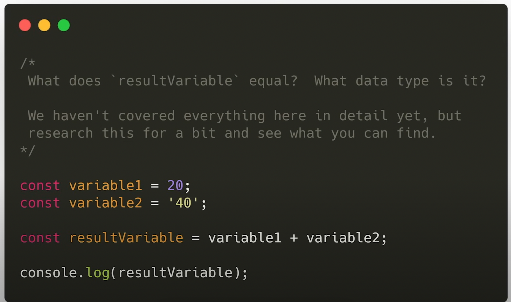
image-4.png - Answer:
resultVariablestores the value ‘2040’. It is of string data type.
- Answer:
Challenge 4:
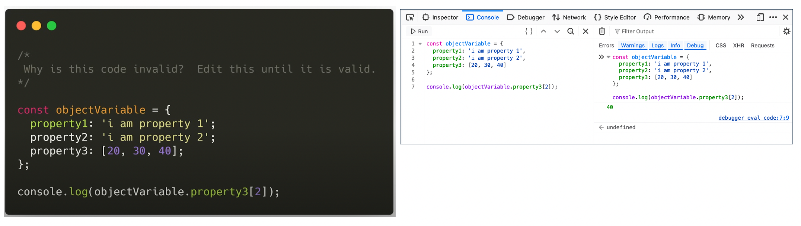
image-2.png Challenge 5:
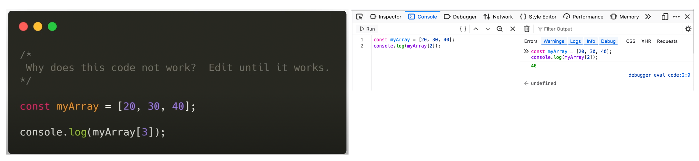
image-3.png
References
- Github/You-Dont-Know-JS: A book series on Javascript to know how Javascript works under the hood.
Lesson 4
Video timestamp: Javascript Operators
Arithmetic operators
+ - * / % ** ++ --- exponent:
** - increment by 1:
++ - decrement by 1:
--
Assignment operators
= += -= *= /=- better to just write the full code.
Comparison operators
== === != !== > < >= <=check comparison in both value and type:
===,!==check comparison in value:
==,!=We can not compare arrays and objects using comparison operator as shown in the example below. Workaround is to use a library called Lodash. ``` const myArray = [1,2,3]; const anotherArray = [1,2,3];
myArray === myArray // [Output] true myArray == myArray // [Output] true
myArray === anotherArray; // [Output] false // intuition = because it is not the same object myArray == anotherArray; // [Output] false // not comparing the same object
const myObj = {property1: ‘some value’, property2: 20} const anotherObj = {property1: ‘some value’, property2: 20}
myObj === myObj // [Output] true // comparing the same object myObj == myObj // [Output] true // comparing the same object
myObj === anotherObj // [Output] false // not comparing the same object myObj == anotherObj // [Output] false // not comparing the same object ```
Ternary operator
- conditional operators with if else statement.
const result = 20 === 20? 'values match' : 'values do not match';
console.log(result)
// [Output] "values match"
// this is equivalent to the below code
let result;
if (20 === 20){
result = 'values match';
}else{
result = 'values do not match';
}
// [Output] "values match"Logical operator
&& || !logical and:
&&``` 20 === 20 && 10 === 10 // [Output] true20 === 20 && 10 === 12 // [Output] false ```
logical or:
||logical not:
!!(20 === 20) // similar to: not(true) // [Output] false
Exercies
- Challenge 1: we can not reassign values to a
constvariable. - Challenge 2: Yes, both code evaluated to
false. 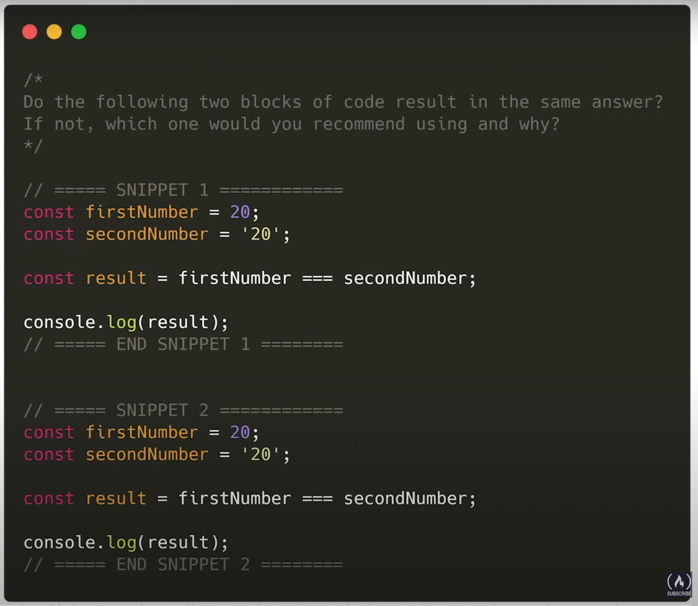 - Challenge 3: expression5 evaluated to
false.
const expression5 = !(((100 % 50) < (100 / 50)) && (300 + 5 === 305))- Challenge 4: result is
true. - Challenge 5: result is
true.
Reference
- Lodash: Javascript library used to comparing arrays and onjects.
Lesson 5
Video timestamp: Javascript functions, conditionals, loops
Conditionals
if structure:
if (condition) {run if true}if - else structure:
if (condition) {run if true} else {run if false}Eg.if ('some string' === 'another string'){ console.log('the strings are equal'); } else { console.lof('the strings are equal'); }if - else if - else:
if (condition1) {run if condition1 is true} else if (condition2) {run if condition2 is true} else {run if condition1 and condition2 is not true}if (20 > 10){ console.log('condition1 is true') } else if (10 < 5) { console.log('condition2 is true') } else { console.log('condition1 and condition2 are false') }if - else if - else if - else if … - else: ``` if (condition1) { // run if condition1 is true
} else if (condition2) { // run if condition2 is true
} else if (condition3) { // run if condition3 is true
} else if (condition4) { // run if condition4 is true
} else { // run if all is false
} ```
switch case statement: ``` switch (expression) { case x: // run if x is true break;
case y: // run if y is true break; default: // code block if no case above is found} ```
Loop
- for loop basic structure:
for (let i = 0; i < x; i++){ // do something }
Functions
Declaring function:
function myFunction() { console.log('hello world, this is my first function'); }Call function: ``` myFunction();
// [Output] “hello world, this is my first function” ```
Immediately invoked function ``` (function anotherFunction(){ console.log(‘hello’); })();
// [Output] “hello” ```
Function with parameters: ``` function myFunction(param1, param2) { console.log(param1); console.log(param2); }
myFunction(100, 200); // [Output] 100 // 200 ```
Anonymous function (function without a name): ``` // notice we did not give the function a name const anotherFunction = function () { console.log(‘just another function;’); }
// call function anotherFunction(); // [Output] “just another function” ```
Arrow function: basic syntax
const myvariable = () => { // code to run}``` const arrowFunction = () => { console.lof(‘i am an arrow function’); }// to call arrowFunction(); // [Output] “i am an arrow function” ```
Return values from function ```
// —- FUNCTION WITHOUT RETURN VALUE —- // declaring function and save in a variable called
myFunctionconst myFunction = () => { console.log(‘printing something’) }// saving the return value of myFunction() into
resultvariable const result = myFunction(); // [Output] “printing something” // because we called the function// if we try to print
resultvariable, it will not return anything becausemyFunction()does not return anything console.log(result)// —- FUNCTION WITH RETURN VALUE —- const myFunction = () => { const a = 20; return a; }
// saving the return value of myFunction() into
resultvariable const result = myFunction();// printing value stored in
resultvariable console.log(result) // [Output] 20```
Run a function using an alias: ``` // —- run a function directly —- function myFunction() { return 20; }
console.log(myFunction()); // [Output] 20
// —- run a function using another variable —- const aliasVariable = myFunction; console.log(aliasVariable()); // [Output] 20
// —- run a function using another object —- const myObj = { prop1: 40, prop2: myFunction }
console.log(myObj.prop2()); // [Output] 20 ```
References
Lesson 6
Lesson 7
Video timestamp: Built-in JavaScript methods
Summary: How to read documentation.
Reference
Lesson 8
Video timestamp: Callback functions
Why we need callback?
- Reusability:
- Eg we can use
.map()on any array to do many various operations, just by using various callback function.
- Eg we can use
- Asynchronous: Useful for when we want to run multiple codes in parallel.
- Reusability:
Callback using 2 functions:
- Passing a function to another function (the main function) and ask the main function to execute the function we passed to it. Eg
function myCallback(someNumber){ return someNumber * 2; } function mainFunction(randomNumber, shouldCall, callback){ let result = randomNumber; if (shouldCall){ result = callback(randomNumber); } return result; } mainFunction(20, true, myCallback);Callback using anonymous function:
mainFunction(20, true, function (num) {return num * 2;} );Callback using arrow function: ``` mainFunction(20, true, (num) => {return num * 2});
// further simplified: whatever to the right side of => is what gets return, can omit {} mainFunction(20, true, (num) => num * 2);
// further simplified: no need parenthesis because there is only 1 parameter to the arrow function mainFunction(20, true, num => num * 2); ```